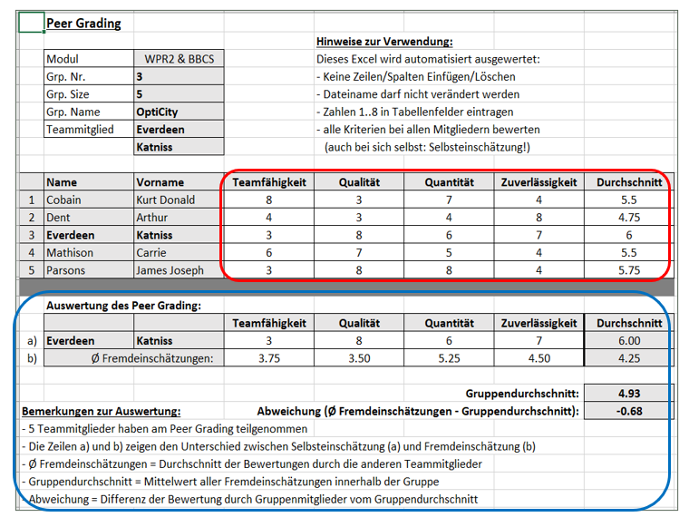
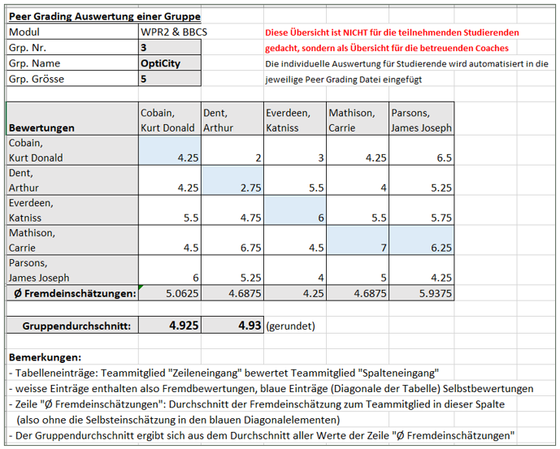
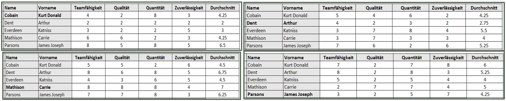
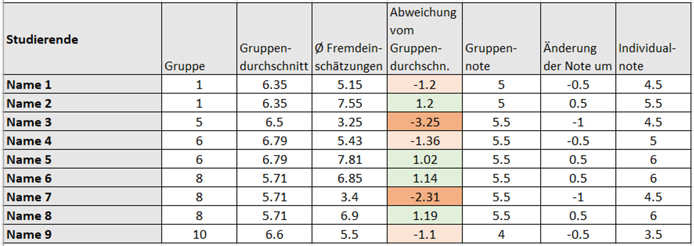
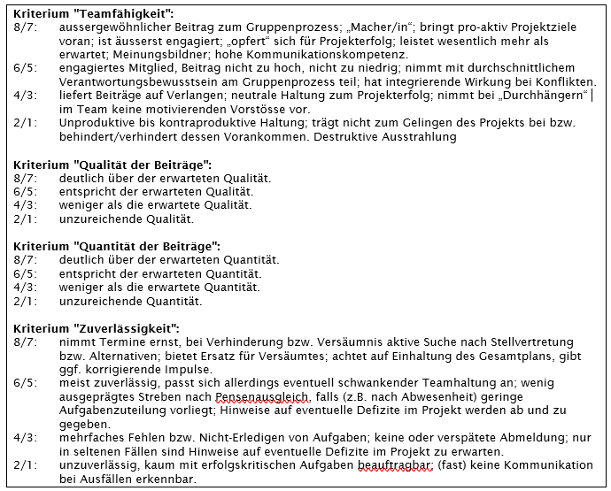

Bei Gruppenarbeiten tragen im Idealfall alle Teammitglieder in gleichem Ausmass zum Gesamterfolg des Projektes bei, meist aber auf individuell unterschiedliche Weise. “Peer Evaluation” resp. “Peer Grading” dient dazu individuelle Beiträge in Gruppenarbeiten zu bewerten ([Kaufman et.al. 1999], [Brutus & Donia 2010]). Dabei bewertet jedes Gruppenmitglied nach definierbaren Kriterien sowohl alle anderen Gruppenmitglieder (Fremdeinschätzung) als auch sich selbst (Selbsteinschätzung). Die Ergebnisse werden innerhalb jedes Teams anonymisiert zur Verfügung gestellt. Das Ergebnis einer gegenseitigen Bewertung anhand verschiedener Kriterien lässt eine differenzierte Beurteilung der Selbst- bzw. Fremdeinschätzung sowie die eigene Positionierung innerhalb der Gruppe zu. Peer Grading ermöglicht so einen reflektierenden Blick auf den eigenen Beitrag.
Zu Beginn der Peer Grading Phase erhält jedes Gruppenmitglied ein individualisiertes Formular, das in folgender Abbildung beispielhaft für "Katniss Everdeen" aus der 5er-Gruppe Nr. 3 (mit Gruppennamen "OptiCity") gezeigt ist. Bei der Verteilung an die Teilnehmer ist der rot umrandete Bewertungsbereich leer und der blaue Auswertebereich nicht sichtbar (verborgen). Erst nach Ausfüllen und Rücksendung des Bogens und nach Abschluss der Auswertungsphase wird der vollständige Bewertungsbogen inkl. Auswerteteil den jeweiligen Personen individuell zugestellt. Die Bewertung erfolgt nach 4 Kriterien mit Punkten 1..8 (Punktetabelle siehe unten) und soll nicht als Note verstanden werden. Die Bewertungen der eigenen Beiträge durch andere Gruppenmitglieder ist insoweit anonymisiert, als lediglich der Mittelwert aller Fremdbewertungen angegeben ist und damit exakte Rückschlüsse auf bewertende Personen nicht möglich sind.
Aus dem Mittelwert aller Fremdeinschätzungen wird dann ein Gruppendurchschnitt errechnet, indem aller Fremdeinschätzungen innerhalb einer Gruppe gemittelt werden (s. folgende Abb.). Für jedes Gruppenmitglied kann anschliessend die Abweichung zwischen dem Gruppendurchschnitt und dem Durchschnitt der Fremdbewertungen des einzelnen Gruppenmitglieds ermittelt werden (vgl. Eintrag "Abweichung:" in obiger Abb.). Im Auswerteteil wird auch der Unterschied zwischen Selbsteinschätzung und Fremdeinschätzung dargestellt (Zeilen "a)" und "b)" in obiger Abb.), was eine kritische Reflektion auch in Bezug auf künftige Teamarbeiten ermöglicht. Die Berechnung des Gruppendurchschnitts erfolgt durch Mittelung aller Fremdeinschätzungen innerhalb einer Gruppe (s. folgende Abb.). Die Werte in den Tabelleneinträgen werden aus den einzelnen Bewertungsbögen der Gruppenmitglieder übernommen. Aus allen Fremdeinschätzungen wird der Gruppendurchschnitt berechnet.
Der Vollständigkeit halber und aus Gründen der Nachvollziehbarkeit sind in folgender Abbildung die Bewertungsbögen der anderen Gruppenmitglieder abgebildet. Die Durchschnittswerte werden in die Tabelleneinträge des obigen Auswertebogens übernommen.
Die Bewertungsbögen sind aus einer Liste der teilnehmenden Studierenden inkl. Gruppeneinteilungen per Python Script erzeugt und werden den Studierenden gegen Projektende zugestellt. Die ausgefüllten Bewertungsbögen müssen nachfolgend durch die Teilnehmer innerhalb Wochenfrist eingeliefert werden. Nach Auswertung der Peer Gradings (ebenfalls per Python Script) werden die mit den Auswertungen ergänzten Bewertungsbögen den jeweiligen Gruppenmitgliedern individuell zugestellt. Die Gruppenauswertungen (s. obige Abb.) werden vertraulich behandelt und verbleiben bei den Dozierenden.
Individualisierung der Gruppennote: Weicht für ein Teammitglied der Mittelwert der Fremdbewertungen um mehr als 1 vom Gruppendurchschnitt ab, so erhöht und vermindert sich die individuelle Modulnote gegenüber der von den Dozierenden vergebenen Gruppennote um eine halbe Notenstufe. Beträgt die Abweichung mehr als 1.5 so ist die individuelle Modulnote um eine ganze Notenstufe besser oder schlechter als die Gruppennote, wie in folgender Abb. beispielhaft dargestellt ist.
Die Kriterien und Abstufungen für das Peer Grading für den BCS Kurs (Sommersemester 2022) sind im Folgenden aufgelistet. Grundlage innerhalb einer Gruppe ist ein gemeinsames Verständnis über die Bedeutung und Anwendung der Abstufungen. Die Standardpunktezahl für gute Mitarbeit ist bei 5/6 Punkten anzusetzen. Die Bewertungen werden auf Basis folgender Punktetabelle vorgenommen:
